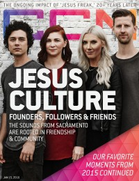

CMnexus
: Contemporary Christian culture, music, and media.
|
Jesus CultureOn the cover
15 January 2016
CCM Digital | Media coverage:- Dec 2010 in CCM Digital "Worship: Bringing Revival", by Emily Hoernschemeyer
- Feb 2011 in Neue "The Sound of a Counter Culture", by CJ Casciotta
- Mar 2011 in Relevant "The Making of a Movement", by CJ Casciotta
- Apr 2011 in Charisma "Behind The Worship: Chris Quilala: The Night That Changed Me"
- Jun 2011 in Charisma "The Radical Revivalists", by Marcus Yoars
- Jan 2012 in CCM Digital "Worship: Jesus Culture Q & A", by Emily Durbin
- Sep 2012 in CCM Digital "Worship: The F[our] Runners", by Emily Durbin
- Feb 2013 in CCM Digital "What's New: Jesus Culture, Martin Smith"
- Jul 2013 in Relevant "The QA: Jesus Culture's Kim Walker-Smith"
- 1 Jul 2014 in CCM Digital "Jesus: a Culture of Possibilities", by Caroline Lusk
- 15 Jan 2016 in CCM Digital "Founders, Followers & Friends", by Kevin Sparkman
- May 2016 in Relevant "The Drop: Conversation: Kim Walker-Smith of Jesus Culture"
- 1 Dec 2016 in CCM Digital "Revelations To Genesis", by Kevin Sparkman
- Nov 2018 in Relevant "On Fire: The Rise of the New Charasmatic Movement", by Joseph Riggs
Albums & reviews:2006: Everything
2010: My Passion
2011: Awakening: Live From Chicago
2014: Reconstructed, Vol. 1
2015: Esto Es Jesus Culture
2016: Let It Echo Unplugged
2020: Church Volume Two
2020: Cafe Sessions
2023: Why Not Right Now?
2025: Worthy of Hallelujah (Live)
Award Summary (Nominations / Wins)
Dove Awards2015 Dove Awards2016 Dove Awards2017 Dove Awards2018 Dove AwardsGrammy Awards |
|